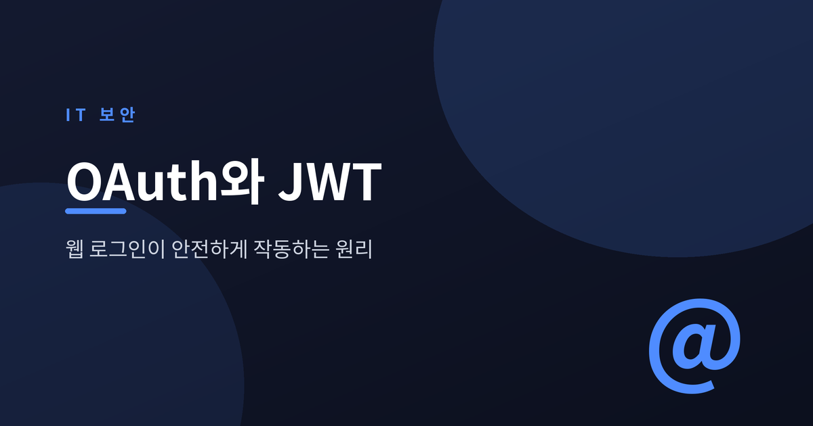
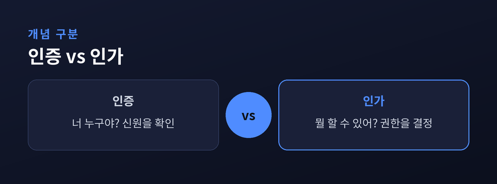
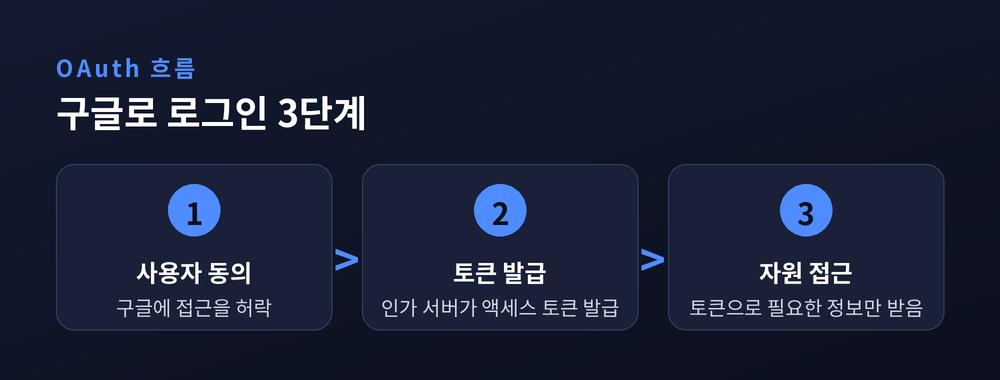
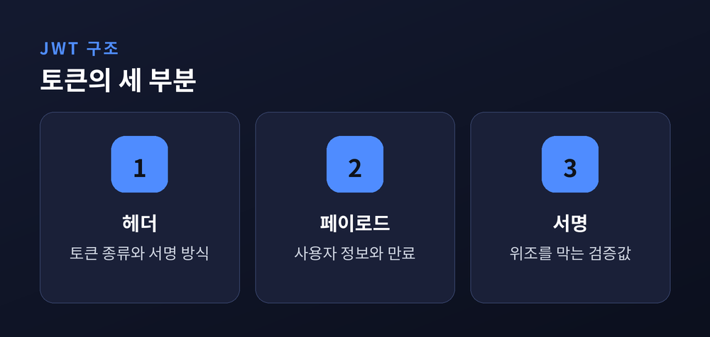

웹 로그인, 어떻게 안전하게 작동할까

웹 서비스에 로그인할 때 두 가지 질문이 오갑니다.
인증(Authentication)은 "너 누구야?"를 확인하는 일입니다.
인가(Authorization)는 "그래서 뭘 할 수 있어?"를 정하는 일입니다.
아이디와 비밀번호로 나를 증명하면 인증이 끝납니다.
그다음 관리자냐 일반 회원이냐에 따라 권한이 갈리는 것이 인가입니다.
둘은 자주 함께 쓰이지만 엄연히 다른 단계입니다.

"구글로 로그인" 버튼을 떠올려 보세요.
새 서비스에 구글 비밀번호를 알려주지 않고도 로그인이 됩니다.
비밀은 액세스 토큰에 있습니다.
구글(인가 서버)이 내 동의를 받아 토큰을 발급합니다.
새 서비스는 그 토큰을 리소스 서버에 제시해 필요한 정보만 받습니다.
비밀번호 대신 "제한된 열쇠"를 건네는 방식이라 안전합니다.

JWT(JSON Web Token)는 정보를 담은 서명된 토큰입니다.
헤더·페이로드·서명 세 부분이 점으로 이어집니다.
페이로드에는 사용자 ID나 만료 시각 같은 정보가 들어갑니다.
핵심은 서버가 세션을 따로 저장하지 않는다는 점입니다.
서버는 서명만 검증하면 토큰을 신뢰할 수 있습니다.
이런 방식을 상태 비저장(stateless)이라고 부릅니다.

OAuth는 "권한 위임 절차", JWT는 "토큰의 형식"입니다.
실제로 OAuth가 발급하는 토큰이 JWT인 경우가 많아 둘은 함께 쓰입니다.
| 구분 | OAuth 2.0 | JWT |
|---|---|---|
| 역할 | 권한 위임 방식 | 토큰의 형식 |
| 핵심 | 액세스 토큰 발급 | 서명으로 검증 |
토큰은 반드시 HTTPS로 주고받고, 짧은 만료 시간을 두세요. 탈취되면 그대로 악용될 수 있으니까요.